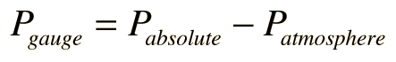

Gauge Pressure
Does the flat tire on your automobile have zero air pressure? If it is completely flat, it still has the atmospheric pressure air in it. To be sure, it has zero useful pressure in it, and your tire gauge would read zero pounds per square inch. Most gauges read the excess of pressure over atmospheric pressure and this excess is called "gauge pressure". While a useful measurement for many practical purposes, it must be converted to absolute pressure for applications like the ideal gas law.
Since a partial vacuum will be below atmospheric pressure, the phrase "negative pressure" is often used. Certainly there is no such thing as a negative absolute pressure, but small decreases in pressure are commonly used to entrain fluids in sprayers, in carburetors for automobiles, and many other applications. In the case of respiration, we say that the lungs produce a negative pressure of about -4 mmHg to take in air, which of course means a 4 mmHg decrease from the surrounding atmospheric pressure.

When a system is at atmospheric pressure like the left image above, the gauge pressure is said to be zero. In this image, the system has been opened so that it is at equilibrium with the atmosphere. In the right image, the system has been closed and the plunger pushed down until the pressure reads about 15 lb/in2. This implies that the absolute pressure has been approximately doubled by compressing the gas to half its volume (ideal gas law). Standard atmospheric pressure in these U.S. common units is 14.7 lb/in2, so this must be added to the gauge pressure above to get the absolute pressure.
|
Index
Kinetic theory concepts |